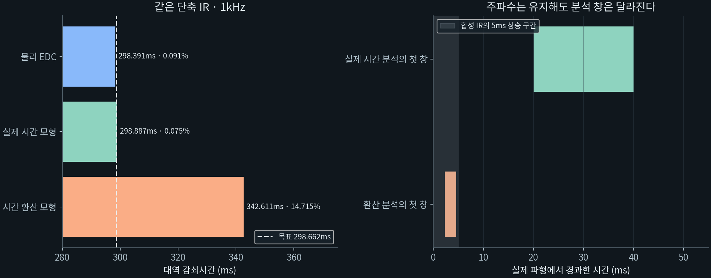
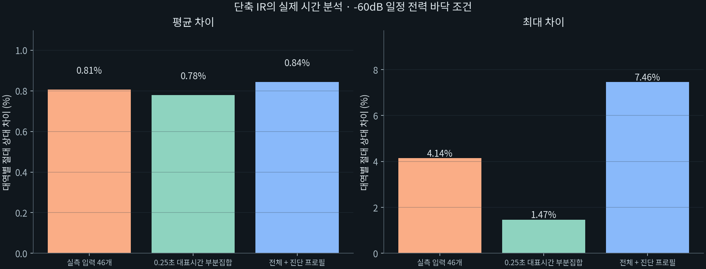
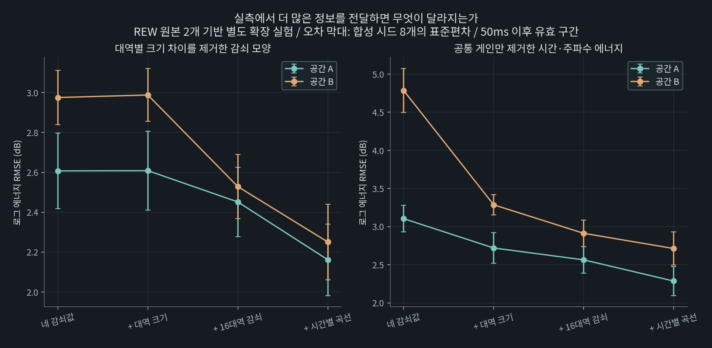

여음 트레이스 연구 보충자료
기술 연구 보고서 · 작성 강민구(Mingkoo) · 2026년 11월
문서판 1.0 · 검증 조건과 분석 정정 기록
목차
A. 과거 개발 실험과 본문 결과의 구분
| 자료 | 입력·조건 | 본문에서 사용하는 역할 |
|---|---|---|
| 녹음 소재·초기 하이브리드 | 짧은 구간, STFT 재합성, 후기 FDN 결합 | 설계 변경의 배경 |
| 과거 보정·선택 | 당시 52개 프로필·4시드·3배율, 624조건 | 현재 방식으로 채택하지 않은 개발 단계 |
| 최종 여음 기준 재검토 | 최종 입력 46개·4시드·3배율, 552조건 | 연구 구현의 설계 비교와 채택 근거 |
| 최대 확장·후기 경로 | 최종 입력 46개·2시드·4배율, 368조건 | 긴 IR과 추가 후기 경로의 별도 비교 |
| 실행 구현 | 실측 입력 46개·진단 5개·2시드·3끝점, 306IR | C++ 구현과 길이 범위의 별도 확인 |
과거 52개 프로필의 결과와 최종 여음 입력 46개의 결과는 입력 구성·추정 기준·평가 방법이 다르다. 본문 4.1절의 ‘이전 EDC 보정·선택’은 과거 결과를 옮긴 값이 아니라 같은 최종 입력에 이전 방식을 다시 적용한 결과다.
연구 구현(v0.2)은 9개 입력에서 29개 설계를 선별한 뒤 재료 전력 안정화 10·20·40·80ms를 비교하고 전체 조건으로 확장했다. 처음 선별에 쓰지 않은 37개 입력도 후속 비교에 포함했지만, 결과를 보며 설계를 수정했으므로 완전히 독립된 검증 집합은 아니다. 기존 유효 앱 대역을 잃은 7/552조건은 보정 전 기존 출력을 유지했다. 낮은 오차만 골라 선택한 것은 아니다.
C++ 실행 구현은 다른 난수 생성기와 FFT 길이 격자를 사용하며, 위의 유효성 유지 대체 선택을 수행하지 않는다. 실행 구현의 결과는 별도 검사 묶음으로 제시한다. 분석한 IR과 최종 C++ 재출력 306개의 해시 일치는 이 실행 구현 내부의 재현 확인이며, NumPy 연구 구현과의 파형 일치를 뜻하지 않는다.
B. 단축 분석의 시간축 환산 정정
긴 응답의 검사를 위해 τ=t/s로 분석 시간을 환산했다. 실제 주파수는 유지했지만 전력 창과 분석 구간의 물리적 길이는 바뀐다. 이 방법을 강한 단축에도 적용한 결과를 실제 시간 분석의 오차로 해석했던 설명을 정정했다. IR이나 입력 목표를 바꿔 더 좋은 수치를 선택한 것이 아니라, 보관된 같은 파형의 두 분석 조건을 구분한 것이다.
기록 033·시드 20262002에서 원본 대표시간 2.1926초를 0.25초로 줄인 경우, 1kHz의 목표는 대역 간 비율에 따라 0.298662초다.
| 같은 파형의 평가 | 시간 | 목표 대비 차이 |
|---|---|---|
| 입력 목표 | 0.298662초 | — |
| 시간축 환산 후 여음 모형 | 0.342611초 | 14.72% |
| 실제 시간의 여음 모형 | 0.298887초 | 0.075% |
| 물리 시간 EDC | 0.298391초 | 0.091% |

14.72%는 실제 감쇠가 그만큼 길어졌다는 근거로 사용하지 않는다. 본문은 단축·원래 길이의 실제 시간 분석과 긴 확장의 환산 진단을 구분하며, 이전 환산 계산도 원자료에 보존한다.
C. 분석 미제공의 의미와 해당 사례
여음 모형은 내부 추정치를 계산해도 신호 지속시간·모형 적합성 등 유효성 조건을 통과하지 못하면 공식 시간값을 반환하지 않는다. 내부 진단용 추정치를 유효한 측정값으로 대체해 집계하지 않았다.
| 분석 조건과 사례 | 관측 및 판정 |
|---|---|
| 환산 분석 · 기록 030 · 500Hz | 모형 불일치 지표 4.001dB로 4dB 기준 초과. 실제 시간에서는 목표 0.304762초·추정 0.307590초로 유효 |
| 환산 분석 · 기록 031 · 500Hz | 모형 불일치 지표 4.135dB로 기준 초과. 실제 시간에서는 목표 0.261852초·추정 0.264398초로 유효 |
| 실제 시간 · 짧은 기본 프로필 · 두 시드의 2kHz | 목표 0.072초. 유효 신호 지속 40ms가 60ms 조건에 미달하고 지속 신호 조건도 통과하지 못함 |
환산 분석의 두 미제공과 실제 시간의 두 미제공은 서로 다른 사례다. 같은 개수라는 이유로 같은 실패로 해석하지 않는다. 출력 IR이 모두 0이 되거나 생성에 실패했다는 의미도 아니다.
단축 범위별 집계
아래는 일정 −60dB 분석 전력 바닥 조건의 실제 시간 결과다. 전체와 두 부분집합은 겹치며 별도 시험으로 합산하지 않는다.
| 자료 범위 | IR 수 | 유효 대역 | 평균 차이 | 최대 차이 |
|---|---|---|---|---|
| 전체 최소 | 102 | 304/306 | 0.84% | 7.46% |
| 실측 입력 46개만의 단축 | 92 | 276/276 | 0.81% | 4.14% |
| 대표시간이 0.25초인 부분집합 | 84 | 252/252 | 0.78% | 1.47% |

이전 자료의 ‘무잡음(clean)’은 분석 바닥값을 추가하지 않은 조건을 뜻한다. 합성 재료가 벨벳 노이즈라는 사실과 구분한다. 이 조건의 실제 시간 분석은 192/306대역만 유효했다. 일정 바닥값을 더한 조건의 304/306과 함께 제시하며, 무잡음의 매우 낮은 잔여 전력에서 발생하는 모형 불일치를 해결했다고 보지 않는다. −60dB 조건은 분석 전력에 일정 바닥값을 더한 통제 조건이지, 현장 주변 소음이나 독립적인 잡음 파형을 새로 추가한 시험이 아니다.
D. 후기 비교의 표본과 정규화
과거 음성 비교의 명목 IR 2·4배에서 후기 경로의 실제 배율은 약 2.158·4.659배였다. 이 자료는 당시 음색·대역 에너지의 관측으로 보존하고 동일 배율의 통제 비교로 사용하지 않는다. 이후 과거 프로필에서 배율과 음량 정책을 맞춘 비교를 수행했으며, 최종 여음 입력으로도 최대 확장 비교를 별도 수행했다.
최종 최대 확장에서는 단위 에너지의 후기 출력을 진폭 0.2·0.4로 더하고 최종 응답을 정규화했다. 다음은 최대 약 15.34배에서의 무잡음 모형 결과다. 각 조건의 유효 표본 수가 다르므로 같은 표본의 직접 비교와 구분한다.
| 구성 | 각 조건의 유효 대역 | 각 조건 평균 차이 | 공통 268대역의 평균 차이 |
|---|---|---|---|
| IR 단독 | 268/276 | 0.383% | 0.383% |
| 후기 진폭 0.2 추가 | 269/276 | 0.428% | 0.405% |
| 후기 진폭 0.4 추가 | 275/276 | 0.927% | 0.741% |
물리 EDC의 전체 276대역 평균 차이는 각각 0.354%·0.432%·0.887%였다. 이 결과와 전력 변동 진단은 검사한 후기 경로를 기본 필수 구성으로 남길 근거를 제공하지 않았다. 다른 후기 합성이나 추가 확산의 청취상 이득까지 부정하지 않는다.
E. 별도 확장 실험과 제품 확인의 구분
과거 참조 IR 두 개에 네 감쇠값·대역 크기·16대역 감쇠·시간별 곡선을 차례로 전달하는 STFT 기반 근사 실험을 수행했다. 이 별도 합성기에서 추가 곡선 정보는 일부 감쇠 모양 오차를 줄였지만, 현재 트레이스가 같은 곡선 정보를 입력받거나 스마트폰 박수에서 항상 확보한다는 근거는 아니다. 본문 성능표에 합산하지 않았다.

블룸 로컬 구현의 VST3·AU 실행, 상태 복원, 전체 IR 컨볼루션과의 출력 비교는 구현 확인이다. 이 검사가 공간 재현 정확도나 청취 선호를 추가 입증한 것으로 사용하지 않는다. 이미 만든 로컬 구현은 보존하고 제품 제작·설치·배포는 보류했다.
자료의 재현 범위
본문과 이 보충자료는 기존 녹음과 합성 실험을 연구 단계별로 구분해 정리한 것이다. 분석에 사용한 입력·처리 버전·미산출 사유·집계 결과는 연구 기록에 보관했다. 현장 녹음과 내부 개발 자료는 이 웹 보고서의 다운로드 항목에 포함하지 않는다. 본문 그림과 표의 검증 조건은 위 각 절을 따른다.
© 2026 강민구(Mingkoo). All rights reserved.